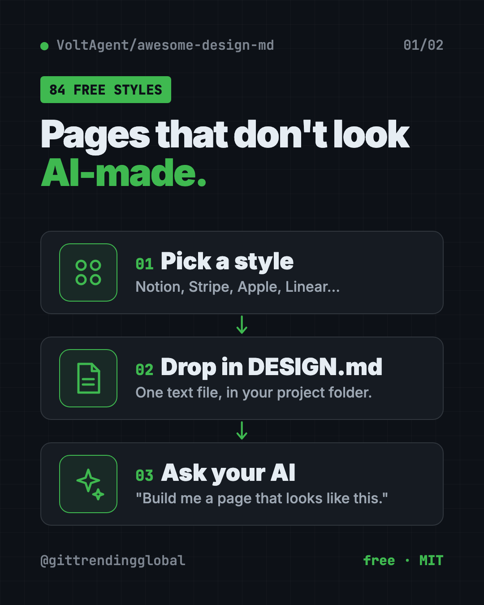
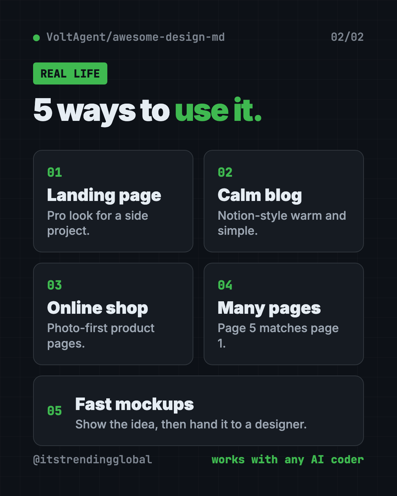

Awesome DESIGN.md: Free AI Design System Files (2026)
- Free AI tools
- Published 2026-10-15
- 7 min read
- Updated 2026-10-16
- Stars 121.5K
- License MIT
- By the It's Trending Global team
Awesome DESIGN.md is a free set of 84 DESIGN.md files for AI. Drop one in your project and Claude Code or Cursor builds pages in that site's style.
Awesome DESIGN.md is a free collection of DESIGN.md files for AI coding tools. Each file is a plain-text style guide based on a well-known website, like Notion, Stripe or Apple, that tells your AI how a page should look.
Ever asked an AI to build a web page and got the same purple gradient and plain buttons as everyone else? This guide shows how one small file fixes that, with real examples and copy-paste setup.
Key takeaways
- Free and open source under the MIT license, from the VoltAgent team.
- 84 ready-made style guides based on real sites, from Claude and Linear to Spotify and Airbnb.
- Just a text file. No Figma, no special tools. Drop it in your project folder.
- Works with any AI coding tool, like Claude Code, Cursor, Codex or Google Stitch.
- Hugely popular: about 121.5K GitHub stars.
What is a DESIGN.md file?
A DESIGN.md is a style guide written for AI. The README (the project's main instructions page) calls it "a plain-text design system document that AI agents read to generate consistent UI." UI means user interface: the buttons, colors, fonts and layout people see.
The idea comes from Google Stitch, Google's AI design tool. Think of it as a recipe card for a website's look. It lists the colors (with exact color codes), the fonts and sizes, how buttons and cards should look, how much space goes between things, and a list of do's and don'ts.
Your AI reads the card, then builds pages that follow it. Ask for a second page, and it still matches the first.
What is Awesome DESIGN.md?
It is a free library of these recipe cards, made by VoltAgent, the team behind an open-source AI agent framework. Each one is based on how a real, public website looks.
The README sums it up: copy a DESIGN.md into your project, tell your AI "build me a page that looks like this," and get UI "that stays visually consistent."

Which styles are in the collection?
The README groups 84 files into themes. A few examples:
| Group | Some of the styles |
|---|---|
| AI platforms | Claude, Mistral AI, ElevenLabs, Ollama, Runway |
| Developer tools | Cursor, Vercel, Raycast, Lovable, Warp |
| Work apps | Notion, Linear, Zapier, Intercom, Cal.com |
| Design tools | Figma, Framer, Miro, Airtable |
| Money apps | Stripe, Wise, Revolut, Mercury |
| Shops and brands | Airbnb, Nike, Shopify, Starbucks |
| Media and tech | Apple, Spotify, Pinterest, WIRED, The Verge |
| Cars | Tesla, Ferrari, BMW, Lamborghini |
There is even a fun "Retro Web" set, with looks like Dell's 1996 site and Nintendo.com from 2001.
Each style also comes with preview pages on getdesign.md that show its colors, fonts, buttons and cards in light and dark mode.
How to use Awesome DESIGN.md (real examples)
- Give your side project a pro look. Drop in the Linear or Vercel file and ask your AI for a landing page. You get clean, precise styling instead of the usual AI look.
- Build a calm notes or blog page. The Notion file brings warm minimalism and serif headings.
- Make an online shop feel premium. Try the Airbnb or Nike file for photo-first product pages.
- Keep a multi-page site consistent. Use one DESIGN.md for every page, so page five matches page one.
- Prototype a pitch fast. A marketer can mock up a landing page in a known style, then hand it to a designer.
⚠️ Heads up: These files are inspired by real brands. The README says they do not claim ownership of any site's look. Use them for learning and as a starting point, and change colors and logos before you launch anything public. Never pass your site off as another company's.
Is Awesome DESIGN.md free?
Yes. The collection is free under the MIT license.
The team also takes custom requests on getdesign.md, "including private requests delivered exclusively to you." The README doesn't list prices for that. You don't need it to use the free files.
How to install a DESIGN.md file
The README's steps are two lines long:
- Copy a site's
DESIGN.mdinto your project's main folder. - Tell your AI helper to use it.
Here is the easy way to do step one. Open Terminal (Mac or Linux) or PowerShell (Windows), go to your project folder, and copy and paste this. It grabs the Notion style:
curl -o DESIGN.md https://raw.githubusercontent.com/VoltAgent/awesome-design-md/main/design-md/notion/DESIGN.md
Want a different style? Swap notion for another name from the list, like stripe, linear.app or spotify. The folder names match the links in the README.
The getdesign.md site also shows a one-line install for each style. For Notion, copy and paste this:
npx getdesign@latest add notion
Then tell your AI helper. Copy and paste this:
Read DESIGN.md in this folder. Build me a landing page that follows it exactly: colors, fonts, spacing, buttons and the do's and don'ts.
💡 Tip: Each DESIGN.md ends with an "Agent Prompt Guide" section with ready-made prompts. Open the file and copy one.
Let Claude or Codex set it up for you
Claude Code and OpenAI Codex are AI helpers that can work on files on your computer. You paste a request, it explains each step, and you approve it.
Copy and paste this:
I want my website to look polished, not "AI-made."
1. Look at the list of styles at github.com/VoltAgent/awesome-design-md.
2. Suggest 3 styles that fit my project, and say why in one line each.
3. When I pick one, download its DESIGN.md into this project's main folder.
4. Rebuild my homepage so it follows that DESIGN.md.
Show me what you'll change before you do it.
Then try asking:
Read DESIGN.md and list every rule my current page breaks.
Make a pricing page that matches DESIGN.md and my existing homepage.
Change the colors in DESIGN.md to my brand colors, but keep the spacing and type rules.

Awesome DESIGN.md at a glance
| Price | Free |
| Works offline | Yes, once the file is in your project |
| Platforms | Any computer; works with any AI coding tool |
| License | MIT (open source) |
| Styles | 84 DESIGN.md files |
| GitHub stars | About 121.5K |
| Best for | Anyone building web pages with AI who wants them to look good |
Who should use Awesome DESIGN.md?
- "Vibe coders" who build sites by chatting with AI.
- Small business owners making their own landing page.
- Marketers who need quick, good-looking page mockups.
- Designers who want AI output to follow real design rules.
- Developers tired of fixing AI's default styling by hand.
Our take
This is one of the simplest upgrades you can give an AI coding tool. One text file, and the pages stop looking generic.
What we like:
- Free, MIT licensed and easy to start.
- Plain text that any AI tool can read.
- Deep detail: exact colors, font scales, spacing and don'ts.
- A big, fun range, from banks to hypercars to 1990s web.
What to watch for:
- These are looks based on real brands. Change them before you ship a public site.
- Previews and extra downloads live on getdesign.md, a separate site.
- A style guide helps, but you still need to check what the AI builds.
Want even better AI-made pages? Pair a DESIGN.md with Hallmark, which stops AI sites looking AI-made, or try Open Design, a free AI studio for prototypes. Awesome DESIGN.md also made our top 5 repos of April 2026.
FAQ
What are DESIGN.md files for AI?
They are plain-text style guides your AI coding tool reads. They list colors, fonts, spacing and component rules, so the AI builds pages in a consistent style.
Is Awesome DESIGN.md free?
Yes. The collection is free and open source under the MIT license. Custom requests are offered separately on getdesign.md.
Which AI tools work with DESIGN.md?
Any AI coding tool that can read files, including Claude Code, Cursor, Codex and Google Stitch. It is just a Markdown text file.
Can I use a brand's DESIGN.md for my own website?
Use them as inspiration. The README says it doesn't claim ownership of any site's look, so swap in your own colors, fonts and logo before launching.
How many styles are in Awesome DESIGN.md?
The README counts 84 DESIGN.md files, grouped by theme, from AI platforms to car brands.
Where do I put the DESIGN.md file?
In your project's main folder, also called the root. Then tell your AI helper to read and follow it.
Get Awesome DESIGN.md: github.com/VoltAgent/awesome-design-md
Follow ITG Now on Instagram for one free, useful tool every day.
Keep reading

DBX: Free Database Client for 100+ Databases, With AI (2026)
DBX is a free database client that opens 100+ kinds of databases in a 25 MB app. Its AI helper turns plain English into database queries for you.

PureMac: Free CleanMyMac Alternative, No Subscription
PureMac is a free CleanMyMac alternative. It clears junk, fully uninstalls apps and finds duplicates, with no subscription, no tracking and no scare tactics.

Strata: Run Big Local AI on a Gaming PC, Free
Strata is a free installer that runs big, private local AI on a gaming PC. It sets up a large Qwen model, so your chats never leave your computer.